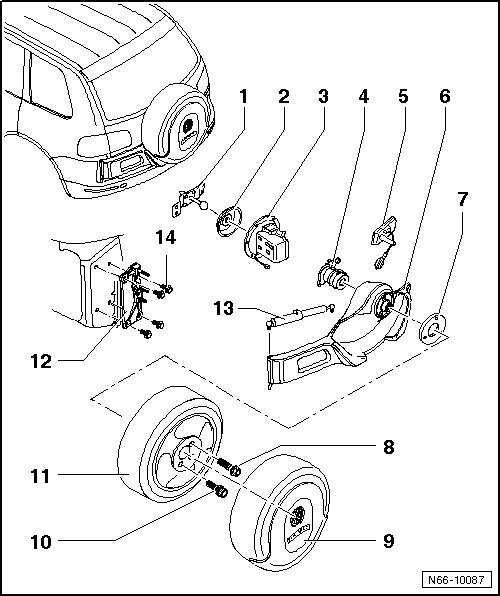
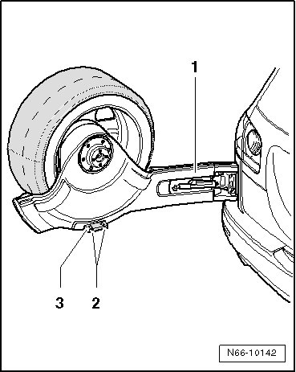

Rear Lid Spare Wheel Mount Overview
Rear Lid Spare Wheel Mount
--> [ Rear Lid Spare Wheel Mount Assembly Overview ]
--> [ Spare Wheel Bracket Guide, Adjusting ]
Rear Lid Spare Wheel Mount Assembly Overview

1 Lock Carrier
• Removing and Installing, refer to --> [ Lock Carrier ] Service and Repair
2 Seal
3 Lock
• Removing and Installing, refer to --> [ Lock ] Service and Repair
4 Emergency release
• Removing and Installing, refer to --> [ Release ] Service and Repair
5 Push button
6 Bracket for spare wheel
• Removing and Installing, refer to --> [ Bracket for Spare Wheel ] Service and Repair
7 Spacer for wheel (aluminum)
8 Wheel bolt
• Anti-theft with adapter
9 Spare wheel cover
10 Wheel bolt
11 Spare wheel
• Removing and Installing, refer to --> [ Spare Wheel ] Service and Repair
12 Retaining plate
13 Gas strut
• Removing, refer to --> [ Gas Strut ] Hood
• Venting gas, refer to --> [ Gas Strut, Venting ] Hood Overview
14 Screws
• Quantity: 4
• 65 Nm
Spare Wheel Bracket Guide, Adjusting
- Loosen bolts - 2 - partially.

- Open and close the spare wheel bracket - 1 - several times to adjust the guide - 3 -.
- Then tighten bolts - 2 -.
- Tightening specification: Bolts - 2 - 20 Nm.